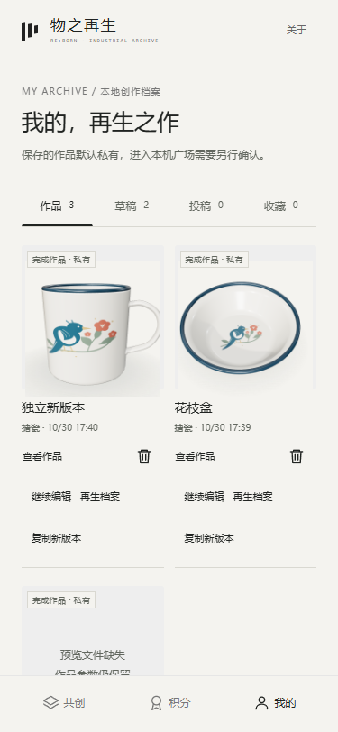
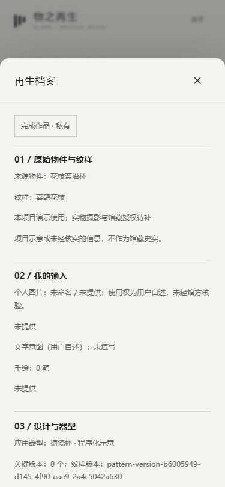

2026-10-30。本轮复用现有原生H5、四器型三维与IndexedDB事务，没有另建应用或部署。根目录及父目录无AGENTS.md，已复读现有代码与《物之再生_Codex开发目录与首页素材规范》。
打开我的 · 主要交互实测 · 读取/模型异常 · 投稿与收藏
prototype/manage-model.js：独立复制、恢复校验与修复副本。prototype/manage-views.js：我的管理操作、状态、再生档案和缺失预览。prototype/app.js：档案/复制/修复/文件检查动作、草稿恢复保护、投稿档案入口。prototype/storage.js：逐项处理素材读取失败，支持主动刷新本地文件缓存。prototype/index.html、prototype/cup.css：模块接入及沿用tokens的手机样式。tests/manage.test.cjs、scripts/qa-round07.cjs、scripts/qa-round07-errors.cjs、scripts/qa-round07-records.cjs：单元与实际浏览器测试。index.html、物之再生-H5-单文件.html、README.md、使用说明.txt、task_plan.md、findings.md、progress.md、docs/round07-*、previews/round07-*：构建产物、说明和验收证据。79/79 自动测试 · lint · 构建。单文件构建已实际打开，三底栏及进入三维页通过。
验收数据中刻意保留了一条“预览文件缺失”记录，用于展示异常反馈。


本项目目录PowerShell执行 $env:PORT='8879'，再 npm start；已有服务直接访问 http://127.0.0.1:8879/prototype/index.html#mine。
存储依赖同一浏览器和访问地址；关闭/重新打开可保留已保存数据，但清除网站数据、浏览器回收存储或磁盘损坏不保证恢复。本轮未做云备份或从丢失文件中重建图像。实体设备仍待验收。
正式馆藏、真实AI服务、云同步/公开发布、馆方积分及工厂授权未新增接入。现有模型与素材仍标注示意；投稿为本机记录。停止第07轮，不自动进入下一轮，不部署。